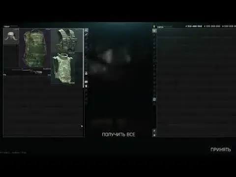

Croupier - loadout generator + flea quicksell
- Downloads
- 33,925
- Favourites
- 18
- Mod lists
- 53
This trader does 2 things:
1) 🔫 Sells random loadouts - gear, meds, nades, gun, mags, ammo. Everything you need in a raid, generated instantly, in one in-game mail, ready to wear & rock.

2) 💸 Buys your FiR items and pays an average flea market price for them, minus a tax.
In 3.x he pays you right away, but buys only FiR items. If you’re on 3.11 or 3.10, please read “FiR selling compatibility” part.
In 4.x he first buys all your stuff as a regular trader, and then sends you the difference for sold FiR items.
------------
Notes:
- There are 3 tiers of loadouts: low, mid and top. You can choose to buy a loadout with or without a gun.
- Generally, you’ll get what you pay for. However, there’s a chance you might get a TOZ-106 in the top tier or a Slick armor with level 6 plates in the low tier for example.
- Gun presets are randomized, but mods for each gun and tier are carefully handpicked, - which means presets rarely recur and they don’t need much adjustments at the same time.
- If your PMC is naked, just use Alt+click on item to wear it.
- The idea of the “Blackmarket” (FiR quicksell) feature is to sell found-in-raid items in the standart trader window.
- There is an option that doesn’t allow you to sell FiR items for fleamarket price before you reach level 15. If you want to sell FiR items for flea price before reaching 15 lvl just disable (set to false) “enable_FIR_only_after_15lvl” in config.
- 3.x only: The “Blackmarket” (FiR quicksell) feature is ported with its main problem: you can’t see how much money you’re gonna get before selling. Can’t do anything about it, nor really care.
- 3.x only: The “Blackmarket” (FiR quicksell) feature is now disabled by default - not all people seem to need it and it also has a compatibility problem (see below).
- 4.0 only: One of the most annoying issues with the 3.x version was that the money amount you saw in the trader window and the money amount you were actually getting were different. Now it works like this: you get what’s written in the trader window right away, and then receive the difference via in-game mail. For example, a pack of cigs costs 1k roubles at the trader and 8k on the flea. You sell it to the trader, get that 1k instantly, and receive the remaining 7k (minus tax) in mail
------------
*FiR selling compatibility (3.x only):
This feature is conflicting with any mod that intercepts the standart trading (sends you items in messages, sells XP points/skills, non-inventory quest items, etc) - for example, Skulltag’s Personal Trainer and Bluehead’s AIO Trader.
If you don’t have such mods and you are wishing to sell found-in-raid items quickly, you can enable this feature in config.json - just set “enable_custom_FIR_selling” to true.
------------
Mods support (full or partial):
- WTT M249
- WTT AEK-971
- WTT AN-94
- WTT Cz-75
- WTT CZ Scorpion Evo 3
- WTT HK G3
- Choccy Milk’s Walter WA 2000
- Choccy Milk’s Armsel Striker-12
- Choccy Milk’s Kel-Tec KSG-12 Shotgun
- Kopat1ch’es Ratnik Spring Gear Pack
- Kopat1ch’es A-TACS FG Pack
- My gear retextures (Couturier)
- MoxoPixel’s Tactical Gear component
- Epic’s All in One
- Wolfik’s Heavy Trooper Masks
- Pluto’s Echoes of Tarkov - Requisitions
------------
The mods I used/looked into (thanks):
- 101p’s Blackmarket (updated with minimal edits)
- Bluehead’s AIO Trader (custom trader controller)
- Dsnyder’s Unknown Survivor (used as a template for the trader)
------------
FAQ:
> I installed the mod but the trader still doesn’t seem to buy the found-in-raid items for flea market price
Read “FiR selling compatibility”. You need to explicitly enable this option.
> I enabled the FiR selling option, and I don’t have conflicting mods. The trader still doesn’t buy found-in-raid items
You are probably under 15 level. You either need to reach that level, or set enable_FIR_only_after_15lvl to false.
> The loadout boxes appear in the flea market and flood my barters
This is not standart behavior, it seems some mod makes my loadout boxes sellable on the flea market. If you are using the “The Blacklist - flea market enhancements” check this comment, otherwise please let me know the name of the mod.
> How do I change level requirements for MID and TOP loadouts?
This is not recommended due to the game balance reasons, but check this comment.
> How I decrease price for loadouts?
This is not recommended due to the game balance reasons, but check this comment.
Version
2.0.4
Added more items to loadout generation pool:
- Latest gear from Couturier (2.0.2)
- More parts from EpicsAIO
- Wolfik’s HeavyTroopers (FDE and Black)
- WIP: EoT Requisitions NG - a few parts and 2 guns (Ak-15, Ak-19) rn
No code changes. If you don’t have any of those mods there is no sense to update from 2.0.3. However, if you’re still on 2.0.0-2.0.2 version I recommend updating regardless since there have been code fixes in 2.0.3.
Version
2.0.3
Code fixes:
- Fixed the issue with 0-ammo stacks (thanks to Krutor for the report!)
- Fixed the issue when the trader was sending loadouts even when the trade wasn’t successful (thanks to TawnyShake, themodernmeta, and Gleneth for the reports!)
Loadouts:
- Added vanilla AK-50
- Added new items from the Couturier mod (version 2.0.1)
- Added several items from the EpicsAIO mod (AK-15, RMR mount/sight for Elcan Specter, some parts/mags)
I’ll continue adding content from various gear/gun mods. However, due to the project architecture and my limited free time, it’s going to remain quite opinionated.
Version
2.0.2
Fix for “NullReferenceException” on selling some items
Version
2.0.1
- Eyewear brought back
- Facecovers usually match gear color now, more or less
- Added gear from the latest THE CITY’s version
- Added new items from the Couturier mod (from version 1.0.2 to 1.3.1)
- Decreased chance of getting white/winter gear on non-snowy seasons (it’s still possible if you’re unlucky enough)
Version
2.0.0
This is a stable beta release for >4.0.1 (won’t work on 4.0.0), please let me know about any problems.
TLDR:
Mod conflicts fixed + now you get money for sold FiR items in in-game mail.
Full release note:
General:
- Moved the mod to C#;
- Instead of rewriting the Trade controller, which caused conflicts with any mods that used the same approarch (eg Skulltag’s Personal Trainer and Bluehead’s AIO Trader), it now works by intercepting routes and passing the output further, which should theoretically prevent any conflicts.
Flea quick sell:
- One of the most annoying issues with the 3.x version was that the money amount you saw in the trader window and the money amount you were actually getting were different. Now it works like this: you get what’s written in the trader window right away, and then receive the difference via in-game mail. For example, a pack of cigs costs 1k roubles at the trader and 8k on the flea. You sell it to the trader, get that 1k instantly, and receive the remaining 7k (minus tax) in mail;
- Increased quick sell tax from 15% to 20% – consider the additional 5% as the trader’s fee for not having to list your items manually to the flea market;
- Since there appear to be no conflicts with other mods, quick sell is now enabled by default. You can still disable it if you prefer playing without the flea.
Loadouts:
- Slightly increased prices for loadouts. In general, you’ll probably be able to assemble the same loadout yourself for 80-90% of what you just paid, but I think it’s reasonable to charge more for instant assembly and gathering of all the items. Low tier loadouts are probably still underpriced tbh.
Other fixes/additions:
- Fixed the pink boxes problem. Thanks to STK for the report;
- Added config value for flea market / trader’s tax (FleaSellTaxPercent, default is 20%). Thanks to AnxietGame for this suggestion;
- Added config value to allow you to sell non-FiR items on the flea (FleaSellOnlyFoundInRaid, disabled by default). Thanks to mikoning for the suggestion.
Planned:
- Obviously, fix any bugs reported in beta, if any;
- Add new items from the newer THE CITY version & Battlepass Season 0;
- Add new Couturier’s gear that was added starting from version 1.0.2;
- Make facemasks match the selected color scheme of the loadout.
Version
1.2.8
Added gear from Couturier mod. If you don’t have that there’s no sense to download this update.
No code changes this time.
Version
1.2.7
Minor fix: blacklisted the loadout boxes from barters on the flea market (Thanks to Prometo Melhorar for the report)
(3.11)
Version
1.2.6
Minor update (no code changes, only a few fixes in loadouts):
- Added mags: AR-15 5.56x45 Beta C-Mag 100-round, PP-19 9x19 F5MFG 50-round, AR-10 7.62x51 X Products X-25 50-round)
- Changed the standart black 7.62x51 SCAR to SCAR X-17 in Top tier loadouts (the only difference is that it supports 50-round mags)
(3.11)
Version
1.2.5
Ported the mod to 3.11:
- Changed the semiauto Saiga-12 to the identical automatic Saiga-12 FK in Top tier loadouts
- Added new standart guns: Sako TRG M10 and Aklys Defense Velociraptor
- Added new standart equipment: 5.11 Tactical Rush 100 backpack, Mystery Ranch Terraframe backpack, 6B47 Ratnik EMR Arctic helmet, Bank Robber Multicam Alpine chestrig, MTEK Flux helmets (Multicam Arid, olive and Multicam Alpine)
The mod won’t recieve updates for 3.10 since it’s already good and stable as it is. If you need the mod for 3.10 just download the previous (1.2.4) version.
(3.11)
Version
1.2.4
Bug fixes:
- (Hopefully) finally fixed the bug with examining items. Thanks to seijifml and SPTSpy for their reports and help!
- Added missing categories for selling
New mods support:
- WTT CZ Scorpion Evo 3
- WTT HK G3 and HK11 LMG
(3.10)
Version
1.2.3
Fixes:
- Fixed the problem with Fence not giving money after a scav run (thanks to Riggzly for the report)
New mods support:
- AN-94
- WA 2000
(3.10)
Version
1.2.2
- minor fixes in loadouts
(3.10)
Version
1.2.1
Version
1.2.0
Code changes and fixes:
- Added a config option to enable FiR trading only after level 15 (It’s too OP to have a trader who buys stuff for flea market prices before you actually have access to the flea market). Obviously, if you have FiR trading disabled it won’t work anyway
- Made ammo counts a bit more random
- Added more variety to mail messages instead of just having one
- Slightly increased prices for the low tier (sometimes you could sell stuff for more money than you paid)
- Reworked ineffective FiR selling algorithm. Thanks to jj2022 for bringing this to my attention!
- Tried to fix a weird bug I saw once but couldn’t reproduce again. Thanks to DaProk for the report!
- People report it’s possible to get the “loadout” box either from a crate (because of other mods or in vanilla - need to investigate), or from the mentioned bug above. So, now you can sell those boxes back to Croupier, with some losses, of course. Thanks to Beat2er for this suggestion!
Added support for:
- Some new items from Tactical Gear Component
Loadout generation fixes:
- If the weapon has only 2x2 type mag (machine guns basically) and the selected chestrig doesn’t have a 2×2 slot, the mag now goes in the backpack
- Fixed M249 presets that were using 7.62×51 muzzle devices instead of 5.56x45 ones
- Tactical modules in low tier were too good — now you’ll mostly see a blue laser or a simple flashlight
---
(3.10)
Thanks to the SPT community for all the warm comments!
Version
1.1.2
Loadout generation
🎉 Loadout generation is now independent of confirmTrading. Now other mods with custom implementation of TradeController should not break this (core) functionality.
FiR selling (Blackmarket)
- FiR selling still depends on a custom TradeController implementation. As a result, mods that modify standard trading either break FiR selling or the other way around.
- Because of that, and because not all people need this FiR selling feature, this option is now *disabled by default*. If you think you don’t have other mods intercepting standart TradeController feel free to enable this option (‘enable_custom_FIR_selling’ in config.json)
Added support for:
- WTT M249
- (Partial) Tactical Gear component
Bug fixes:
- Fixes for gun presets
- 2 code hotfixes for 1.1.0
(3.10)
Version
1.0.0
(3.10)